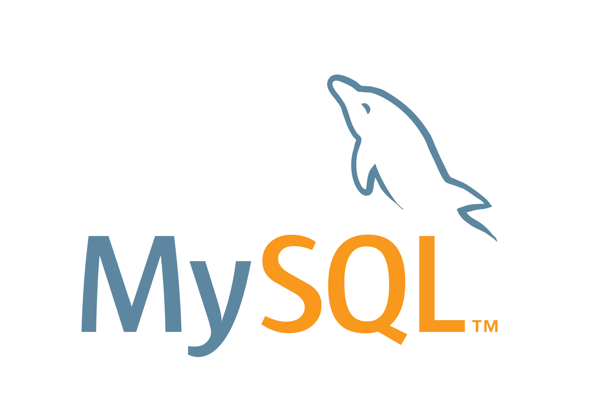

让数据库运维
可知 · 可控 · 可防
DBCheck 是一款开源、跨平台、支持 21 种主流与国产数据库的智能巡检与实时监控平台。内置 344+ 巡检规则、实时监控大屏、本地 AI 诊断与一键报告，把 DBA 的重复劳动变成一键流程。
数据库稳，业务才稳
巡检与可观测不是锦上添花，而是数据库日常运维里最容易被忽略、却最影响稳定性的环节。
业务连续性依赖
一次数据库故障的代价远超日常巡检投入。DBCheck 把"连接、会话、表空间、复制、锁等待"等隐患提前暴露，从被动救火转为主动防御，才是真正的降本。
国产化替代
国产库百花齐放却普遍缺统一巡检工具——DBCheck 已适配 10+ 国产库。
运维人力缺口
DBA 人力贵、流动大，自动化巡检把重复劳动变成一键流程，释放产能。
数据安全合规
金融、政务要求数据不出网。DBCheck 支持纯本地部署与离线 AI 诊断（数据零外传），报告自动脱敏，天然契合高安全监管场景。
把复杂留给自己，把简单交给 DBA
三件 DBCheck 做得最用心的事——也是日常运维里最耗神的部分。
实时监控大屏
按实例展示吞吐、连接、响应延迟与端口可用性，flask-socketio 每 30 秒推送刷新，多实例健康态势一屏掌握。
- 吞吐 / 连接 / 延迟三维曲线，历史趋势随时回溯
- 暂不支持深采的实例，自动展示「端口可用性 + 连通性诊断」
- 慢查询与连接热力图，5~60 秒刷新可调，支持 CSV 导出
本地 AI 智能诊断
基于本地 Ollama 的离线诊断，数据完全不出网；同时支持 OpenAI / DeepSeek 云端后端。把专家经验沉淀为可复用的诊断能力。
- 自然语言发起巡检，Web UI 内置 AI 面板，门槛更低
- RAG 知识库：上传 PDF / Word / MD 自动向量化，诊断时检索最佳实践
- Oracle AWR 上传即解析，生成结构化报告 + AI 诊断建议
一键报告 · 自动脱敏
巡检完成即可生成专业 Word / PDF 报告，自动掩码 IP、端口、账号等敏感信息，对外交付也安心。
- 每种库可独立增删 / 排序 / 启停章节，报告动态生成
- 分享链接免登录查看，权限隔离 + 访问统计，随时撤销
- 定时任务 + 邮件 / Webhook 推送，巡检无人值守
一套平台，覆盖数据库全生命周期
从智能巡检、实时监控到 AI 诊断与合规报告——以下能力均已落地（参考官方文档）。
数据库巡检
覆盖 21 种数据库，344+ 巡检规则，自动生成专业 Word 报告，支持自由配置巡检章节。
逐库深度覆盖
基本信息、会话连接、内存缓存、表空间、SGA/PGA、Redo、归档备份、安全审计、Top SQL、复制/Data Guard、RAC、锁与阻塞等多维度检查。
智能风险分析
自动识别风险，每条附可执行修复 SQL，支持一键执行；危险操作二次确认 + 全程日志。
配置基线管理
可视化编辑各库推荐值（覆盖 15+ 数据库、219+ 基线参数，含动态推荐与默认合规规则），偏离即告警。
索引健康分析
检测缺失、冗余、长期未使用索引，给出优化建议，从源头消除性能隐患。
风险规则统计
MySQL 35+ · PG 27+ · Oracle 20+ · SQL Server 15+ · DM8 16+ · TiDB 18+ · Kingbase 19+ · UXDB 12+ … 按库细分。
首页实时监控
吞吐 / 连接 / 响应延迟 / 端口可用性，flask-socketio 每 30s 推送刷新，多实例健康态势一屏掌握。
慢查询与连接热力图
活跃连接与慢查询实时监控，5~60s 刷新可调，支持 CSV 导出。
历史趋势分析
多轮巡检数据聚合，阈值线 + 前后对比彩色标注，提前发现风险。
非深采连通性画像
暂不支持深采的实例，展示「端口可用性」时间线 + 「连通性诊断」仪表盘（可用率 + 真实失败原因）。
本地 AI 智能诊断
基于本地 Ollama，数据完全离线、零外传；另支持 OpenAI / DeepSeek 云端后端。
AI 对话巡检
Web UI 内置 AI 面板，自然语言发起巡检，降低使用门槛。
RAG 知识库
上传 PDF / Word / MD / TXT 自动向量化，诊断时自动检索最佳实践。
Oracle AWR 分析
上传 AWR HTML，自动解析生成结构化 Word 报告 + AI 诊断建议。
DM8 离线存储检查
无需启动实例，直接扫描 .DBF 识别坏块（全零 / 常量填充 / 截断），支持本地与 SSH 远程。
Word / PDF + 脱敏
一键生成专业报告，自动掩码 IP、端口、账号等敏感信息，适合对外交付。
分享链接
一键生成在线链接，免登录查看，权限隔离 + 访问统计，随时撤销。
巡检章节管理
每种库可独立增删 / 排序 / 启停章节，Word 报告动态生成。
定时任务与通知
Cron 快捷预设，完成后自动邮件（带附件）或 Webhook（企微 / 钉钉 / 自定义）。
插件系统
独立插件架构，生命周期管理、插件市场、干净卸载、数据隔离；内置 MongoDB / Oracle(JDBC) 插件。
SQL 编辑器 & 远程终端
内置 SQL 编辑器（全 11 库、语法高亮）；SSH 远程终端支持多标签与全屏。
服务器巡检
独立于数据库巡检，覆盖 CPU / 内存 / 磁盘 / 网络 / 服务 / 进程。
REST API
API Key 认证，便于接入 CI/CD 与监控系统，融入自动化运维流水线。
多语言 · 主题 · 分发
中 / 英文切换，深 / 浅色主题；Docker 多架构镜像 + 一键打包分发。
从发现风险到解释原因、给出顺序、闭环处置
在标准巡检、实时监控、健康大屏之上，专业版引入协同诊断中枢、eBPF 内核级采集、SSH 安全采集、诊断历史与工单闭环，面向中大型生产环境的深度可观测与根因定位。所有描述均对应真实实现——专业，首先意味着可信。
协同诊断中枢
把「一句目标 + 一个数据源」交给一组专精的诊断专员，在共享上下文（黑板）上协同推进，最终输出异常发现、根因推断、可执行处置方案，以及方案代价评估与工单。
- 五位诊断专员：运行监控哨兵 · 深度巡检分析 · 根因定位 · SQL 治理 · 锁等待分析
- 共享上下文（黑板）：结论在同一空间接力，不层层失真、不压缩
- 方案代价验证：推荐「先易后难」执行顺序，标注是否需维护窗口
- 流式协同：SSE 实时展示"现在谁在研判"，而非黑箱等待
不是黑箱，是一支各司其职的 DBA 团队
协同诊断中枢把「一句目标 + 一个数据源」拆给五位专精的诊断专员。他们在共享上下文（黑板）上串行接力、彼此印证，最终汇成带根因与处置顺序的诊断报告——既专业，又透明。
串行协同：协同诊断中枢依次调度五位专员，单专员异常不中断整体；每位专员把结论写入黑板，下一位在其上接力，并由方案代价验证给出「先易后难」的执行顺序与维护窗口提示。全程 SSE 流式展示「现在谁在研判」。
运行监控哨兵
持续盯防连接数、活跃会话、QPS/TPS、缓冲命中率、复制延迟等实时指标与告警阈值；第一时间发现异常波动、连接风暴、资源打满，把「现在有问题 + 初步信号」写入黑板，触发后续深度研判。
实时哨兵深度巡检分析
在 344+ 巡检规则命中与深采指标之上做二次关联，把零散风险串联成「风险画像」；区分偶发抖动与结构性隐患，指出最该优先处理的问题类别，为根因定位提供结构化线索。
风险画像根因定位
对异常做因果推断，区分「表象」与「根因」，给出可信度与完整证据链；不只治标，更解释「为什么会这样」，把根因结论落到黑板，供治理专员制定处置。
因果推断SQL 治理
审查慢 SQL、全表扫描、缺失/冗余索引、危险 DDL、隐式类型转换等；给出改写建议与索引方案，并评估执行代价与回滚风险，把「怎么改」落成可执行 SQL。
索引与改写锁等待分析
剖析锁等待链与阻塞会话，定位「谁阻塞了谁、卡在哪把锁」；给出 Kill / 重试 / 事务拆分 / 索引优化等处置顺序，在高并发争用场景快速止血。
阻塞止血eBPF 内核级采集
块设备服务时间 p50/p95/p99 微秒级百分位、按进程 IO / CPU 归因，精度高于 psutil，擅长暴露长尾抖动。默认关闭、仅 opt-in，绝不在生产默认注入内核程序。
SSH 安全宿主采集
零侵入、无需预装 Python 也可采集：纯 Shell 脚本经 SSH 注入远端执行。全局并发信号量 + 超时看门狗 + 凭据 Fernet 加密，防打满、防悬挂、防泄露。
统一可观测视图
宿主资源（eBPF / psutil / SSH）+ 数据库细粒度指标 + 巡检风险统一到同一分析平面，根因定位成为可串联的证据链。
工单闭环
诊断结果一键生成工单，跟踪待处理 / 处理中 / 已解决 / 已关闭 / 已取消并回写反馈，形成「诊断 → 派单 → 处置 → 反馈」运维闭环。
诊断历史
每次协同诊断完整落库，生成诊断编号（diag_no），支持按数据源筛选、列表浏览、查看完整结果与一键回填工单。
克制而可信
采集失败透明暴露真实原因而非静默空值；eBPF 全程可降级、零依赖 Shell 兜底——在"能力强"与"不添乱"之间取平衡。
四步，从接入到报告
无需复杂配置，DBCheck 把「连上数据库 → 自动巡检 → 风险诊断 → 产出报告」串成一条流水线。
接入数据源
统一管理连接，支持分组、批量巡检、CSV 导入导出，一次配置多次使用。
智能采集
按库执行 344+ 规则与深采指标，多实例并发采集，连接失败自动重试与退避。
风险分析
自动识别风险并附可执行修复 SQL；本地 AI 辅助诊断，给出优化建议。
报告与告警
一键生成 Word / PDF（自动脱敏），定时推送邮件 / Webhook，随时掌控。
三种方式，几分钟跑起来
无论你习惯容器、compose 还是源码，都能快速启动。启动后访问 http://localhost:5003。
docker run -d -p 5003:5003 \ -v dbcheck_data:/app/data \ -v dbcheck_reports:/app/reports \ --name dbcheck \ jackge12345/dbcheck:latest
curl -o docker-compose.yml \ https://raw.githubusercontent.com/\ fiyo/DBCheck/main/docker-compose.yml docker compose up -d
git clone https://github.com/fiyo/DBCheck.git cd DBCheck pip install -r requirements.txt python web_ui.py
社区版提供 Docker / 源码部署；专业版不提供 Docker 拉取，以授权许可方式交付。
一套工具，纳管你的全部数据库
21 种主流与国产数据库统一接入，正是信创混合架构下的现实需求。

MySQL MariaDB TiDB
TiDB
 PostgreSQL
IvorySQL
KingbaseES
PostgreSQL
IvorySQL
KingbaseES
 Oracle
Oracle
 SQL Server
SQL Server
 达梦 DM8
YashanDB
GBase 8s
MongoDB
ClickHouse
优炫 UXDB
瀚高 HGDB
TDSQL-C MySQL
OceanBase
Redis
Redis Cluster
DB2
持续扩展中
达梦 DM8
YashanDB
GBase 8s
MongoDB
ClickHouse
优炫 UXDB
瀚高 HGDB
TDSQL-C MySQL
OceanBase
Redis
Redis Cluster
DB2
持续扩展中
谁在用，用在哪
从个人 DBA 到企业信创项目，DBCheck 覆盖数据库运维的关键节点。
日常巡检与交接
定时巡检 + 一键报告，把经验沉淀成文档，新人也能快速接手库。
国产化迁移合规
统一纳管混合架构下的国产库，生成信创合规报表，迁移前后可对比。
数据安全与等保
纯本地部署、离线 AI 诊断，数据不出网，契合金融政务等高监管场景。
故障快速定位
实时监控大屏 + 历史趋势，异常早发现、根因快定位，缩短 MTTR。
务实、开源、贴合国产环境
这些特质让 DBCheck 在真实运维场景里更好用、更可信。
开源可审计
Apache 2.0 开源，代码透明、可自托管，社区持续反哺。
国产库适配
10+ 国产库率先适配，覆盖信创混合架构现实需求。
插件生态
插件市场可热加载扩展，巡检规则、告警渠道、报告模板皆可定制。
数据不出网
纯本地 / 私有化部署，离线 AI 诊断契合高安全监管。
轻量落地
一条命令或打包版即可运行，部署与学习成本极低。
社区版免费开源，专业版为授权产品
标准版聚焦"发现风险"，专业版进一步回答"为什么"和"先做什么"。两者共用同一套巡检、监控与报告底座。
| 能力 | 社区版 | 专业版 |
|---|---|---|
| 多数据源智能巡检 | ✅ | ✅ |
| 实时监控 + 健康大屏 | ✅ | ✅ |
| 本地 AI 诊断赋能 | ✅ | ✅ |
| 插件体系 | ✅ | ✅ |
| 企业级 RBAC | ✅ | ✅ |
| eBPF 内核级宿主采集 | — | ✅ opt-in |
| SSH 安全宿主采集 | — | ✅ |
| 协同诊断中枢（5 专员 + 黑板） | — | ✅ |
| 方案代价验证 | — | ✅ |
| 工单闭环 | — | ✅ |
| 诊断历史 | — | ✅ |
| 统一可观测视图（宿主 + DB + 巡检） | — | ✅ |
专业版 不提供试用，也不提供 Docker 镜像拉取；以授权许可方式交付，需获取许可证后部署。
社区版 · 免费开源
- 全量巡检与实时监控能力
- 21 种数据库适配
- 本地 AI 诊断 / 报告导出
- 插件系统与 REST API
专业版 · 授权产品
- 社区版全部能力
- 协同诊断中枢 + 方案代价验证
- eBPF / SSH 内核与宿主采集
- 工单闭环 + 诊断历史
服务与生态
- 数据库健康检查服务（按年）
- 云市场入驻（阿里云/腾讯云/华为云）
- 定制适配与专家支持
和我们一起把数据库运维变得更简单
DBCheck 由社区驱动。欢迎 Star、提交 Issue、贡献代码，或来信交流你的使用场景与需求。